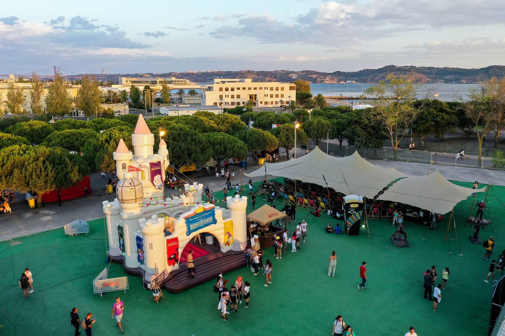
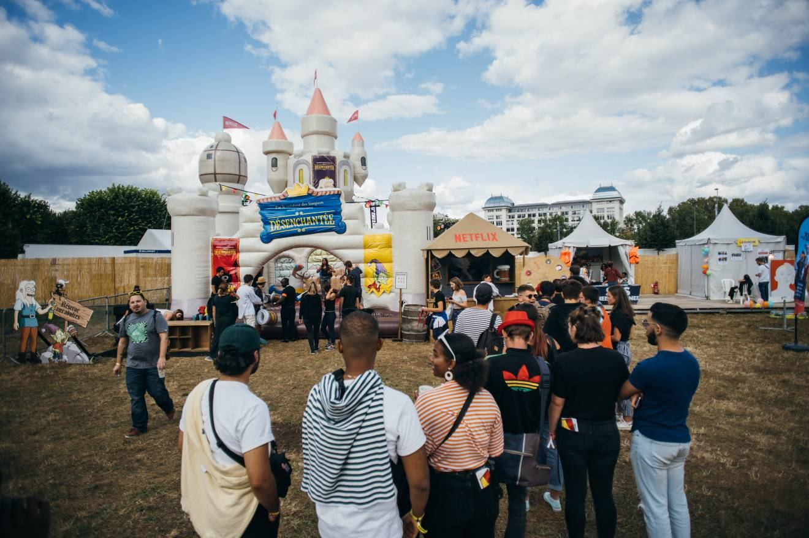
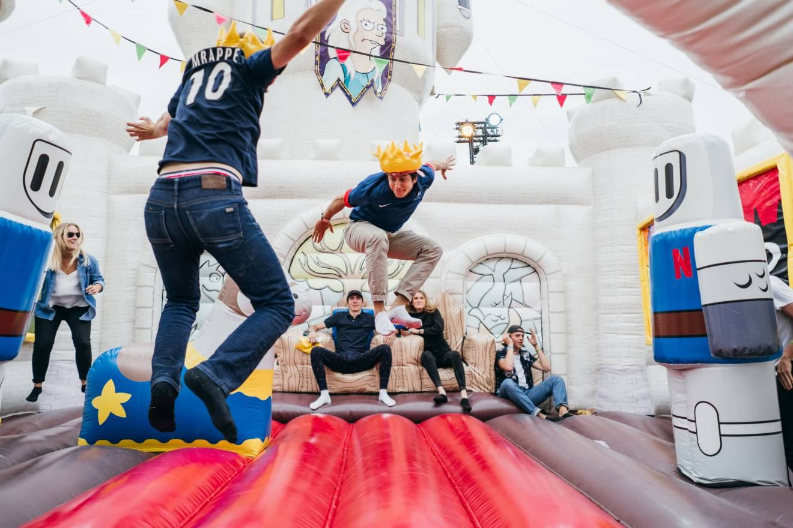
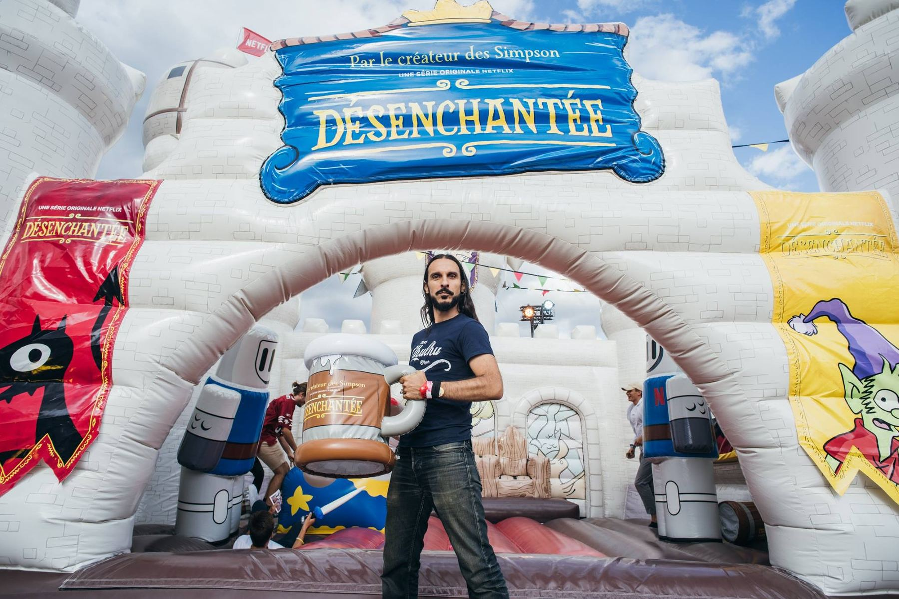
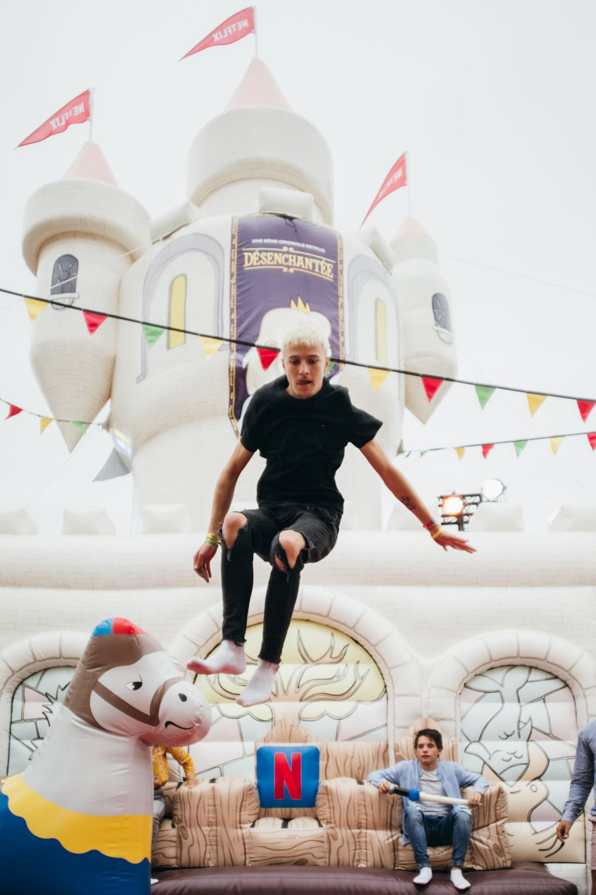
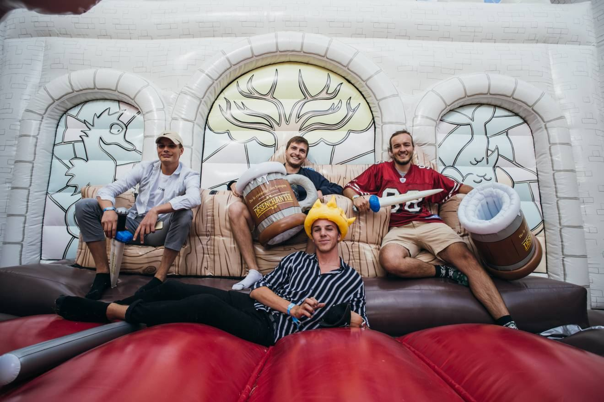

Quand Netflix lance « Désenchantée », la première série de Matt Groening, l'enjeu n'est pas de communiquer plus. C'est d'exister dans un flux où tout se ressemble, où personne ne s'arrête.
Concepteur-rédacteur sur le projet chez MNSTR, je porte la conception du dispositif et son écriture. Au cœur de Rock en Seine, un château gonflable de 120 m², réplique du château de Dreamland, s'installe pour trois jours. Goodies thématiques, déclinaisons localisées et tournée européenne à suivre.
Le pari est simple. Pour exister dans un flux saturé, il fallait sortir du flux. Quitter l'écran pour devenir un lieu. Quitter la diffusion pour devenir un endroit qu'on traverse.
Le château devient l'un des spots les plus photographiés du festival. 100 000 festivaliers le traversent en trois jours. Le contenu se crée, la diffusion suit, sans qu'on ait à pousser un seul média.





